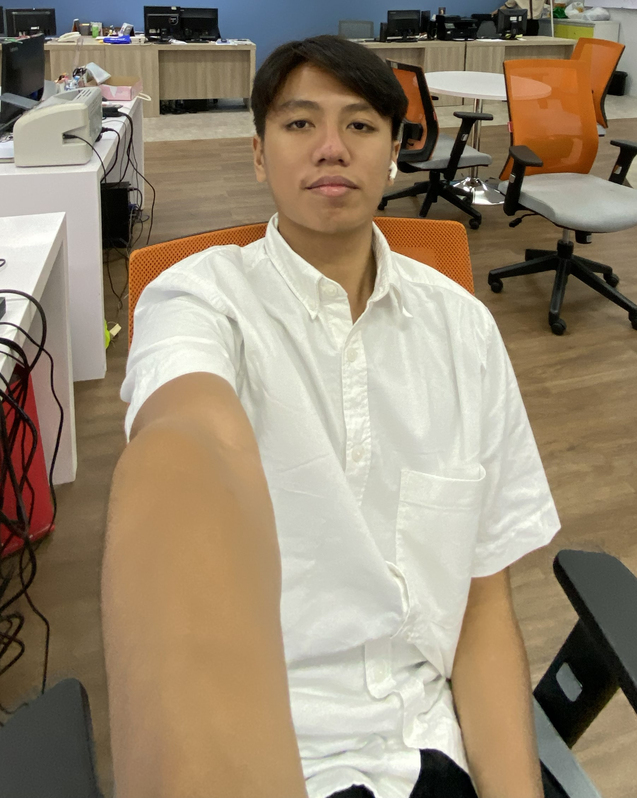

Saya Adam, fresh graduate dari jurusan Teknik Informatika. Saya tertarik pada pembuatan web dari sisi front-end maupun back-end. Saya percaya bahwa kode yang baik bukan hanya yang berjalan, tapi yang mudah dibaca dan dipelihara.
Di luar coding, saya aktif mengikuti hackathon dan belajar hal baru secara mandiri. Saya siap bergabung dan berkontribusi nyata di tim Anda.
